Revision exercise 3
In the following figure determine the pairs of equal angles and the proportional sides which make ΔAEB ~ ΔDEC.
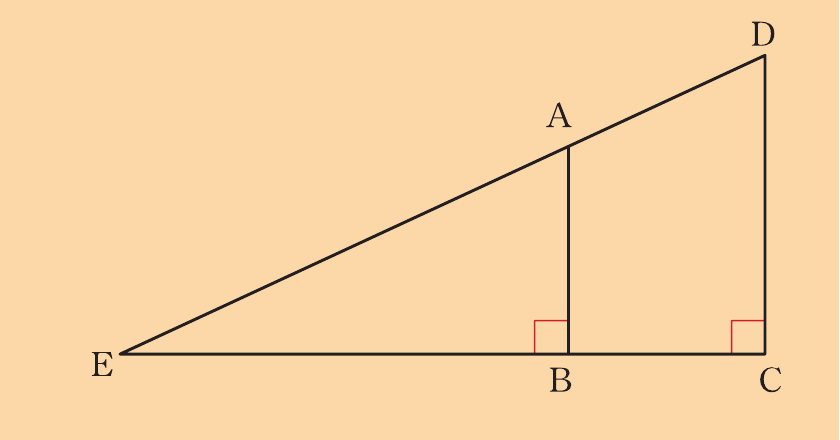
Name two triangles similar to ΔABC in the following figure.
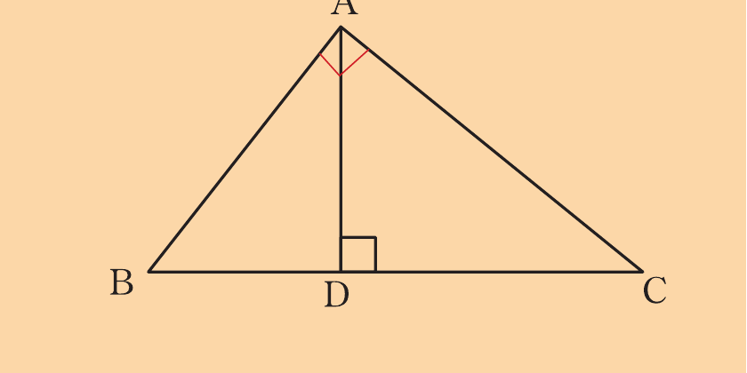
If ΔLMN ~ ΔPQR and ΔPQR ~ ΔABC, mention equal angles in ΔABC and ΔLMN, hence mention all proportional sides in ΔPQR and ΔABC.
Find the ratio of proportionality for the similarity of ΔPQR and ΔABC.
A triangle ABC is such that CA is extended to X and BA is extended to Y so that XY / /BC.
Prove that .
A trapezium PQRS is such that PQ / /RS.
If the diagonals intersect at X, prove that .
Name a triangle which is similar to ΔABC in the following figure.
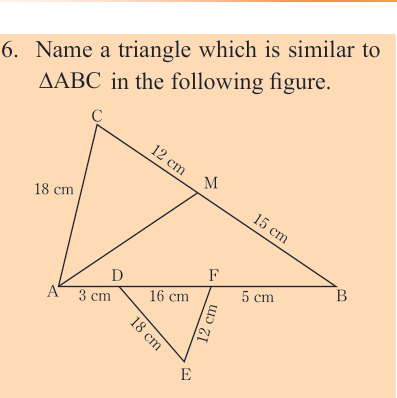
Use similarity to find the value of ED in the following figures.
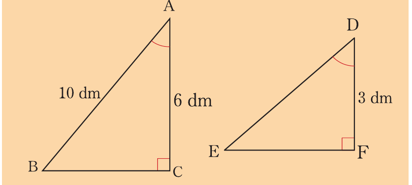
If ΔPQR ~ ΔLMN, PR = 20 dm, NL = 10 dm, NM = 12 dm and LM = 9 dm, find the lengths of the other sides of ΔPQR.
Prove that any two equilateral triangles are similar.
In ΔPMT and ΔQNS, = = = .
Prove that PM × NS = QS × MT.
Study the following figure, where DE is parallel to BC.
Answer the questions that follow.
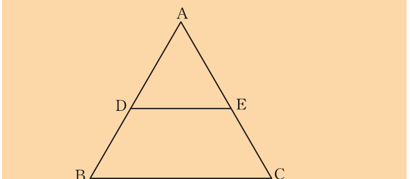
(a) If AD = 4 dm, AB = 8 dm and DE = 10 dm, find the value of BC.
(b) If AE = 5 cm, AC = 15 cm, BC = 24 cm, find the value of DE.
(c) If AD = 7 dm, DE = 11 dm, BC = 22 dm, find the value of BD.
(d) If BD = 9 dm, DE = 20 dm, BC = 35 dm, find the value of AD.
(e) If AD = 10 cm, DE = 24 cm, BC = 84 cm, find the value of AB.
(f) If AE = 3 cm, DE = 3 cm, BC = 7 cm, find the value of CE.
Determine the values of x and y in the following figures:
Figure with points A, B, C, D, E and F; AC is marked 12 dm, AD is marked 12 dm, CD is marked 10 dm, and the top segment near C is labeled x.
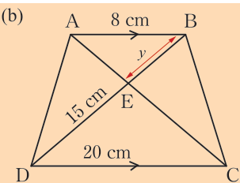
In each of the following pairs of figures, which triangles are similar?
Calculate the lengths of the sides and angles which are not given.
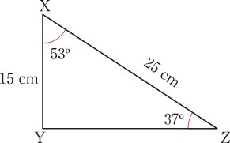
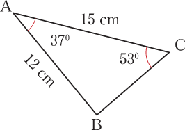
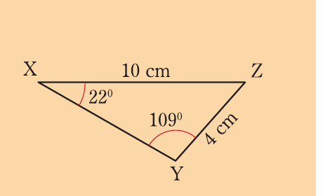
Second triangle in the pair is triangle MLN with ML = 6 cm, LN = 12 cm, angle L = 109°, and angle N = 49°.
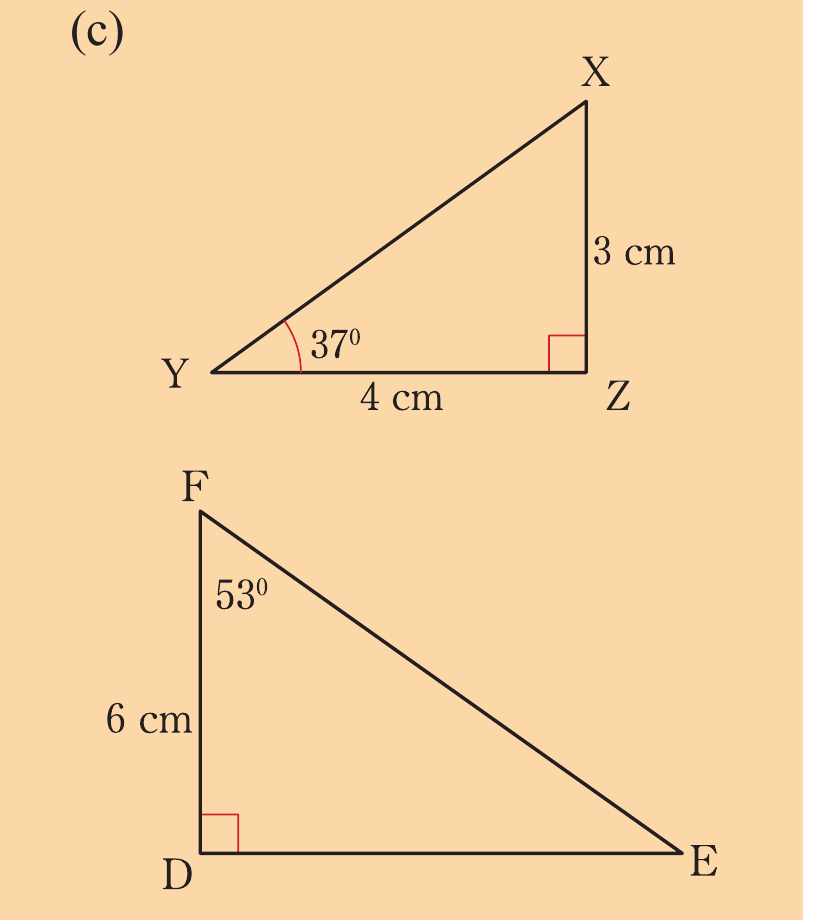
In the following figure, explain why ΔABC and ΔADE are similar?
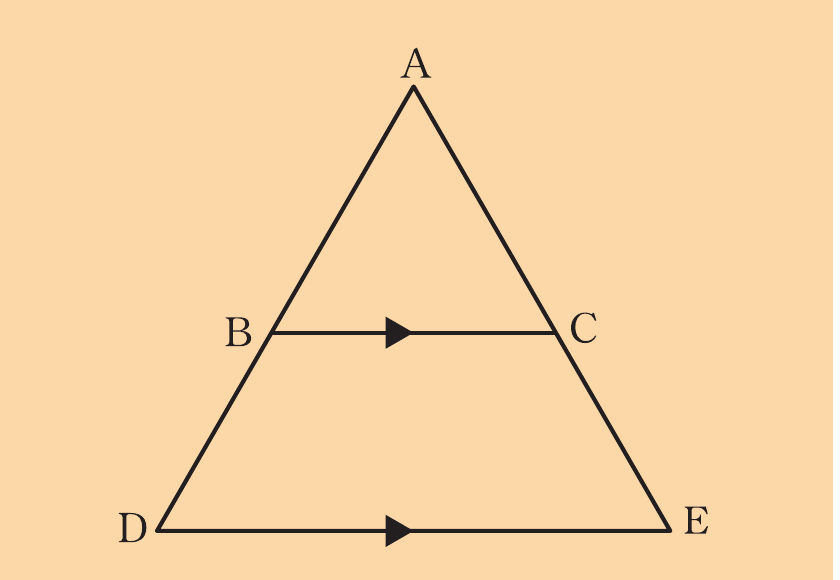
If AB = 8 dm, AC = 9 dm, BC = 6 dm and AD = 12 dm, calculate the values of AE and DE.
Study the following figure and answer the questions that follow.
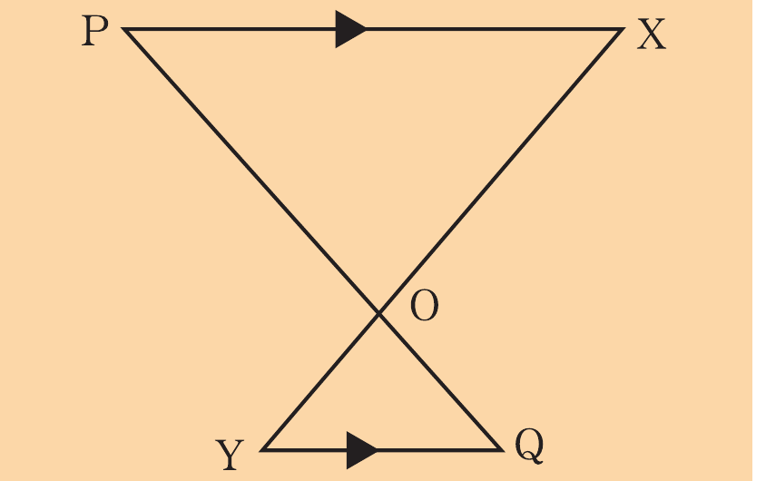
(a) Which triangle is similar to ΔYOQ?
(b) Given that OP = 4 m, OX = 7 m, PX = 6 m, YQ = 4.5 m, calculate the values of OY and OQ.
A triangle ABC is defined such that CD bisects AĈB.
(a) Prove that AD/AC = BD/BC.
(b) If AC = 36 cm and BC = 28 cm, find the length of side AD if AB = 16 cm.
In triangle EFG, HL is drawn inside the triangle parallel to EF.
Prove that FL/LG = EH/HG and hence find FL if EH = 35 cm, HG = 44 cm, and LG = 36 cm.